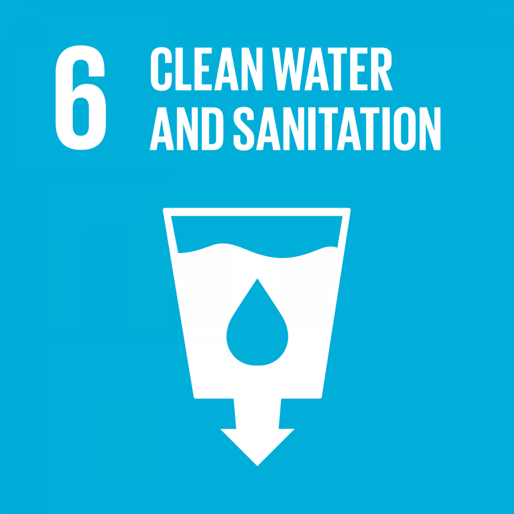
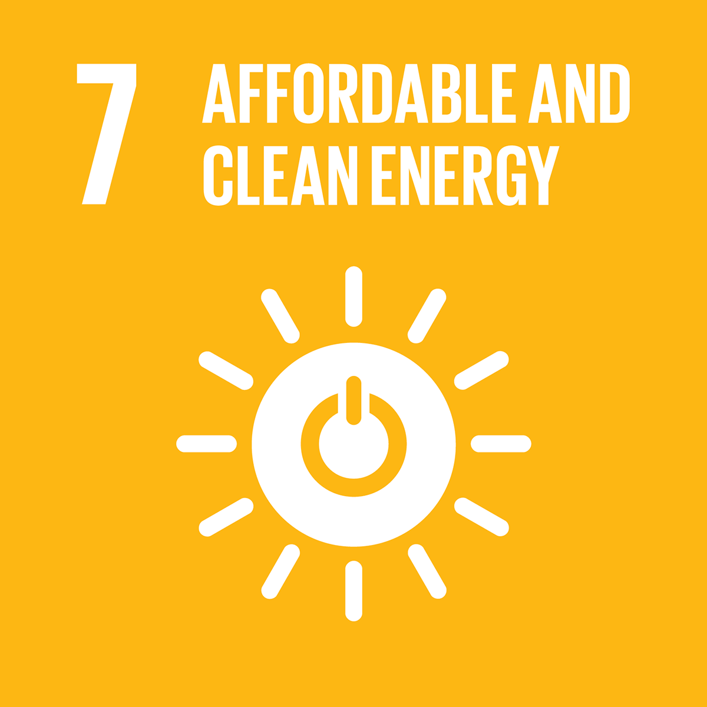
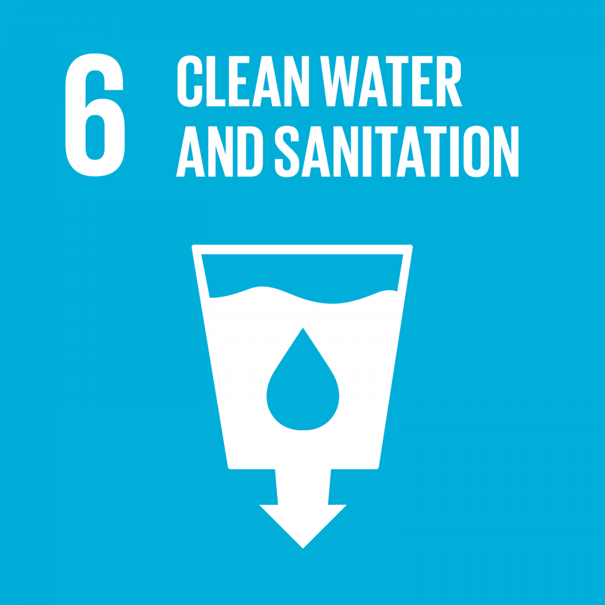
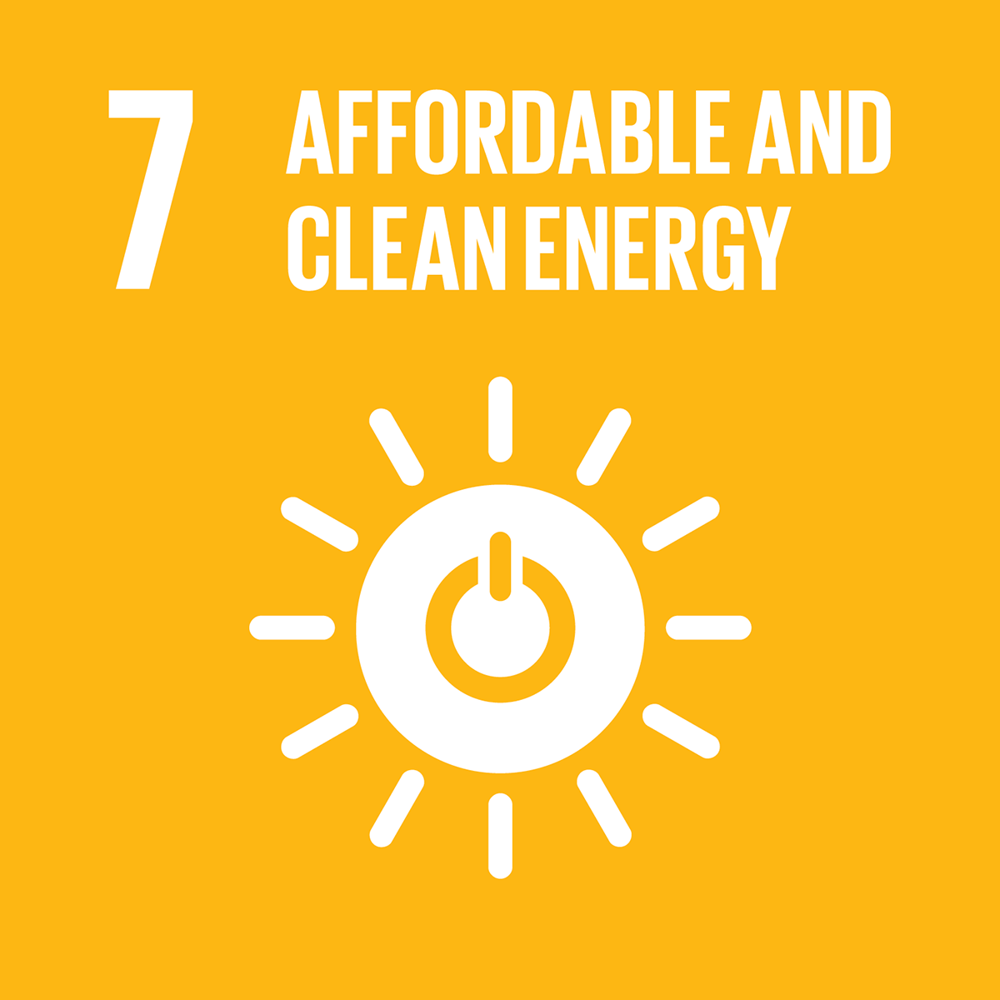
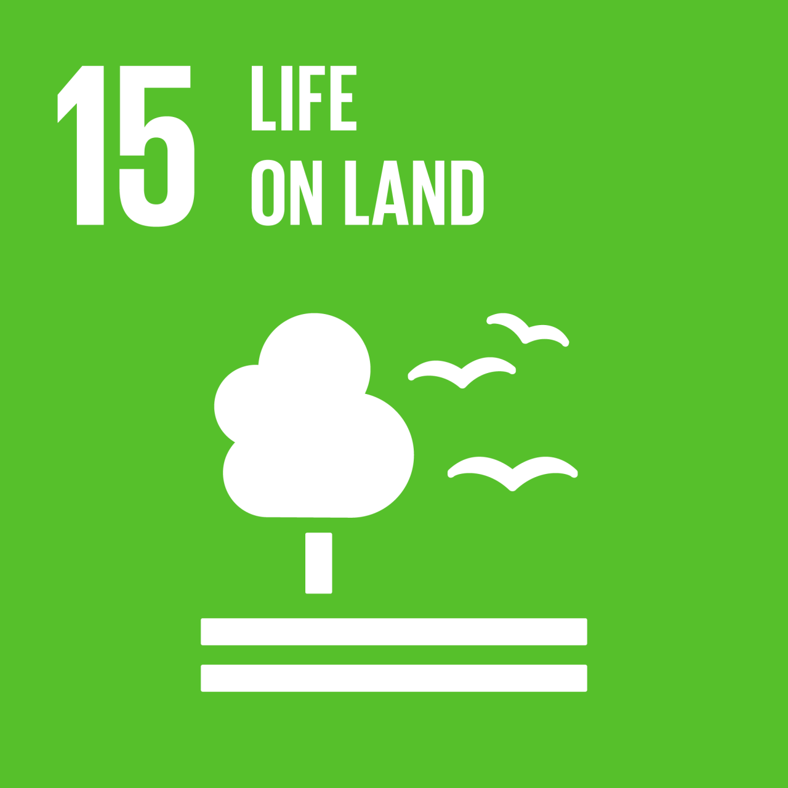
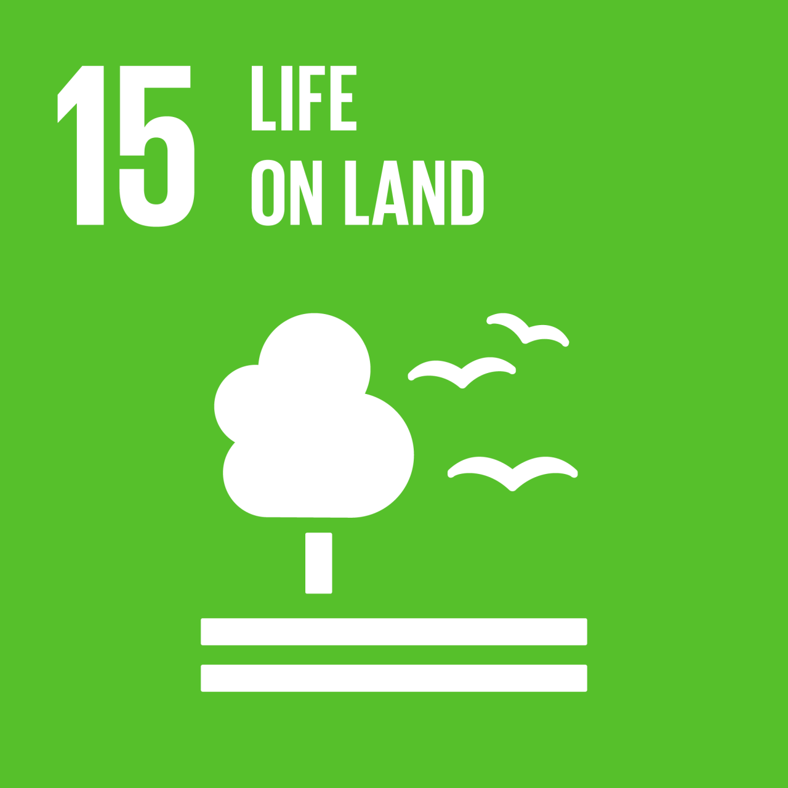

Salvaguardia dell'ambiente
Punti Chiave
- Misure contro il cambiamento climatico
- Gestione sostenibile dell'acqua
- Packaging sostenibile
- Spreco alimentare
- Innovazioni tecnologiche e collaborazioni tra industrie
Analisi
Nel Ferrero Sustainability Report 2023, la protezione dell’ambiente è identificata come uno dei capisaldi della strategia di sostenibilità del Gruppo.
L'approccio dell’azienda si basa su principi scientifici, un’attenzione alla riduzione degli impatti lungo l’intera filiera e un impegno tangibile per affrontare sfide cruciali quali il cambiamento climatico, la scarsità di risorse idriche e la gestione dei rifiuti.
L’approccio ambientale adottato da Ferrero si fonda su una visione olistica e precauzionale: l’impresa non si limita a ridurre i propri impatti diretti, ma considera l’intero ciclo di vita dei prodotti, dalla produzione delle materie prime fino al fine vita degli imballaggi.
Consapevole che la maggior parte delle emissioni proviene da fasi della filiera difficilmente controllabili (Scope 3), come la logistica e la produzione delle materie prime, l'azienda si impegna ad agire in tali ambiti tramite innovazioni tecnologiche e collaborazioni strategiche.
La lotta al cambiamento climatico rappresenta una priorità. Ferrero ha sviluppato un piano di decarbonizzazione in linea con gli obiettivi dell’Accordo di Parigi, prefissando traguardi ambiziosi per il 2030: tra questi, una riduzione del 50% delle emissioni Scope 1 e 2 e del 43% dell'intensità delle emissioni totali.
Nonostante una crescita produttiva del 16% dal 2018, le emissioni dirette sono state ridotte del 10% grazie a iniziative di efficienza energetica e all’impiego di elettricità proveniente al 100% da fonti rinnovabili in 17 stabilimenti, con l’espansione progressiva a nuovi siti.
Innovativo è anche l’impegno nel trasporto sostenibile, con l’adozione di treni, camion elettrici e biogas. Un esempio significativo è il trasporto ferroviario dei biscotti Nutella, che ha comportato una riduzione del 70% delle emissioni rispetto al trasporto su strada.
Ferrero considera l’acqua una risorsa essenziale e un diritto umano universale. Anche se i suoi processi produttivi non richiedono grandi quantità d’acqua, l’azienda punta a una gestione efficiente nei processi industriali, come nei lavaggi e nei sistemi di raffreddamento.
Grazie ad azioni mirate, nel biennio 2022/23 è stato possibile diminuire del 20% l’intensità del consumo idrico rispetto all’anno precedente, e sono stati completati audit idrici in siti produttivi chiave, investendo sul riutilizzo e sul trattamento avanzato delle acque reflue.
Gli imballaggi rivestono un ruolo strategico sia in termini di impatto ambientale sia di interazione con il consumatore. Ferrero ha progettato oltre il 90% dei suoi imballaggi per essere riciclabili, riutilizzabili o compostabili.
Inoltre, prosegue il passaggio da materiali multimateriali a monomateriali, riducendo significativamente l’uso di plastica vergine, come dimostrato dal nuovo packaging Ferrero Rocher da 24 pezzi in Europa.
Ferrero dichiara che 12 dei suoi stabilimenti produttivi hanno raggiunto un tasso di recupero dei rifiuti superiore al 99%, un risultato che testimonia l'efficacia delle politiche di riduzione e valorizzazione dei residui. Questo dato include sia i rifiuti industriali che gli eventuali scarti alimentari derivanti dal processo produttivo.
La strategia non si limita quindi allo smaltimento corretto, ma mira al recupero di valore, in linea con i principi dell’economia circolare.
Per Ferrero, la tutela dell’ambiente non è un tema collaterale, ma un elemento cardine per garantire la resilienza dell’impresa e il benessere delle generazioni future. Attraverso un approccio trasparente e basato su dati scientifici, l'azienda si distingue per la volontà di innovare e collaborare, divenendo un punto di riferimento nell’industria alimentare a livello globale.
Come ci allineiamo agli Obiettivi di Sviluppo Sostenibile (SDG).
 



 
